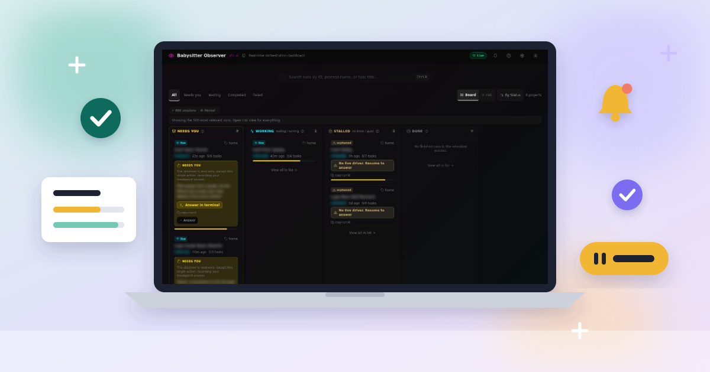
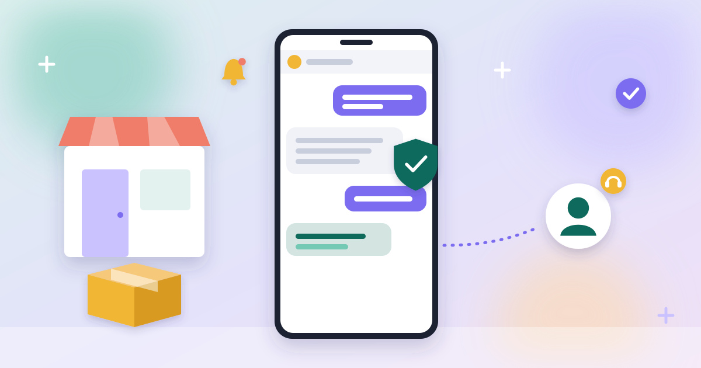
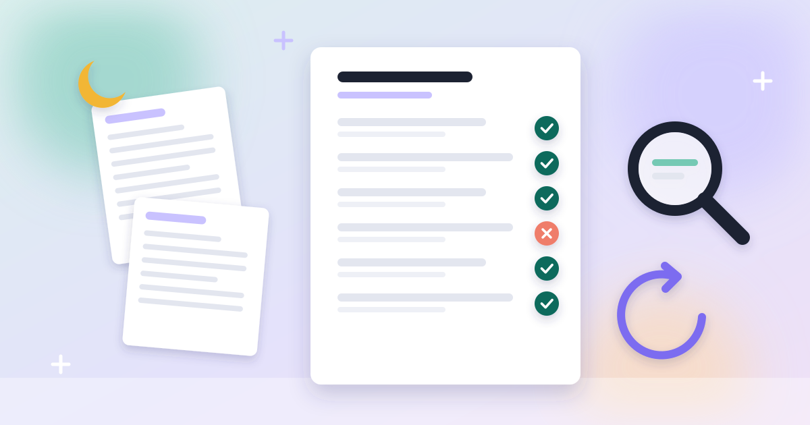

AI Solutions Engineer. Hands-on AI agents, automation and integrations, without breaking what works.
I am an engineer who connects the systems your team already uses and automates the work repeated between them. Think of the same data copied by hand from one program to another every week. I start from how you work today, and a person still approves what matters.
Have work like that? Send me one example, and in a short call I will tell you whether it can be automated and what it takes. yoavmayer@gmail.com
Before going independent in March 2026, I spent seven years as team leader of the automation and software infrastructure team at Arad Technologies, in industrial R&D. I wrote C#/.NET there from 2014 and have built with language models since early 2025.
Today: Python, TypeScript, a language model over its API (swappable) and Claude Code.
How I work with AI
I count a tool only when it saves real time every week, when other people use it, or when a manual step is gone.
Time. For a small business, over 85% of the manual invoicing work is gone, and the owner still approves every invoice.
Used by others. An open-source AI agent project replaced its own dashboard with mine.
New work. A Hebrew podcast spent a lot of time on prep and had barely any social clips. Now a set of agents does the prep and makes the clips, and I choose what goes out.
Projects
In production
CRM to invoicing integration for a small business
For
The owner of a small business.
The problem
Every invoice was retyped by hand from her CRM into her invoicing system.
What I did
I connected the two systems through their APIs and webhooks, with logging and a trace from every CRM record to its invoice. Each invoice waits for her approval before it is issued.
Result
Over 85% of the manual invoicing work is gone.

Open source, merged upstream and published on npm
Babysitter observer dashboard
For
Teams that hand long jobs to AI agents with Babysitter, an open-source framework for running AI agents.
The problem
AI agents pause when a person has to approve a step. In the old dashboard the approval never got through, and nothing showed an error.
What I did
I built a new dashboard where you watch the agents work and give the approval. In August 2026 the project replaced the old one with mine.
Result
One screen shows every agent job, how long each step took, what got stuck and what waits for a person's OK, and can bring back any past run. Approvals now get through.
Ran live at a medical conference, 4 and 5 November 2026
Live translation at a medical conference
At an Israeli medical conference the lecturers spoke Hebrew, and visiting doctors read and heard the talks in English on their own phones while the lecturer was still talking. I built that app: speech to text, then translation by a language model over its API, checked against a medical glossary.
Before the event it was tested on recorded talks it had not seen. It works for any source language.

A product-advice chatbot for a small business
I built a product-advice chatbot demo from a small business's product sheet. The spec showed the product data needed cleanup and clear categories before any bot could answer reliably, so the plan starts there.

Research reports that get fact-checked
For
Anyone who makes decisions from written research.
The problem
A report written by AI can state things its sources don't say.
What I did
One agent writes a sourced report. A second agent checks every cited claim against its source page and sends failures back for a rewrite.
Result
No report is released until every cited claim matches its source page.
private repo
A multi-agent system for a Hebrew podcast
A Hebrew podcast spent a lot of time on episode prep and had almost no social clips. I built and run a set of agents its hosts and panelists use: nightly transcription, research briefs before each episode, reels with proofread subtitles, analysis after each episode, and a Telegram bot that answers questions by quoting past episodes. It saves the hosts a lot of prep and produces the social clips. The transcription side, podcast-intel, is open source.
Making a printed photo book meant sorting and picking every photo by hand. I packaged the work as Claude skills that sort photos by date, shortlist photos for a person to choose, group faces and lay out print-ready pages, with an installer and a click-by-click guide that people without a technical background run on their own. It cut the manual work by over 80%.
Staffing and shift-planning app
I co-built a web app that moved an organization's availability and duty rosters off spreadsheets. People use it today.
private repo, demo on request
Home builds
At home I turn repeated chores into small automations: a weekly grocery basket priced across Israeli supermarket chains, a Hebrew World Cup pool that replaced my friends' shared spreadsheet, a monthly family finance report and event-ticket alerts.
At Arad Technologies
December 2018 to February 2026
Automation and software infrastructure team leader, Arad Technologies
Led a team of five (developers, DevOps, QA) plus a development subcontractor, and owned the shared .NET tooling of the R&D department.
Made calibration at least 4x faster and ended waits on subcontractor firmware releases by moving most processing off the meter's embedded card into a .NET service with the team. Brought the new platform from requirements to the production line, leading its integration and Scrum delivery.
Led the design and build of an in-house C# application for all communication with the meter: read and write commands, log downloads and over-the-air firmware updates.
Owned the hardware and software testers for the meter's communication protocols on the production line, and automated over 70% of the firmware team's regression testing, with the team, through C# tests run during development and on every official release.
Moved the team from SVN to Git on Azure DevOps with CI/CD.
Trained the production engineers and subcontractors who used the team's tools.